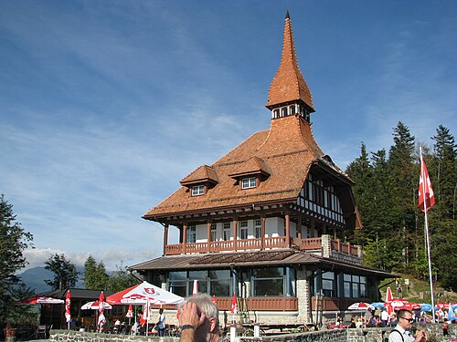
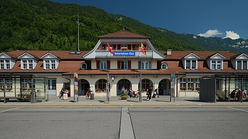
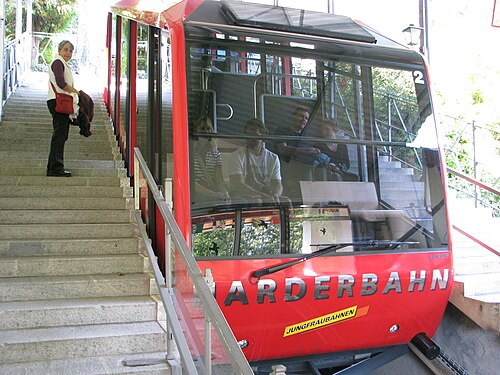

This map shows 7 of the most-searched sights in Interlaken as photo spots, ranked by how often people search for them: Harder Kulm, Interlaken Ost, Harder Funicular, Unterseen Old Town and Höhematte lead the list. Every spot has a pin on the subject and a phone icon showing where to stand, with tips for shooting it on your phone: which lens to use, how to frame it, a settings tip and the best time of day. Directions and Navigate buttons take you to the standing point on foot or by public transport. 3 spots are free to view; the full map is for members.
The 3 free photo spots
1Harder Kulm

Harder Kulm is the viewpoint above Interlaken, at 1,322 metres on the western end of the forested Harder ridge. It photographs well because you look straight down on the towns of Interlaken and Unterseen and the flat land between them, known as the Bödeli. Your eye then follows the Lütschine valley southwards to the high peaks of the Bernese Alps. That gives you a foreground, a middle distance and a mountain backdrop in one frame. The top is occupied by a castle-like restaurant and an observation platform next to it, which makes a natural place to take pictures. The Harderbahn funicular climbs from Interlaken in about eight minutes. Its upper station is some five minutes' walk from the restaurant, so allow a little time for that last stretch. For phone photos, keep the horizon level and use the town below for scale. A wide shot shows the whole valley. A zoomed shot isolates the peaks at the far end. Take a few frames at different zoom levels rather than relying on one. If the sky is hazy or cloudy, concentrate on the town and the valley floor and leave the summits as a bonus.
Where it is: Harder Kulm sits on the western end of the Harder ridge, directly above the towns of Interlaken and Unterseen. It belongs to the municipality of Unterseen, in the Bernese Oberland.
Shooting it on your phone
Lens: Start with the default lens (1x) for the whole view of the town and valley. Switch to the ultra-wide (0.5x) to include the platform or railing in the foreground. Use telephoto (2x-5x, depending on your phone) to pick out the Bernese Alps at the end of the valley.
Where to stand: Stand about 320 m north-west of the subject, at the phone icon on the map, and face south-east. Use the observation platform beside the restaurant and face south, looking over Interlaken and up the Lütschine valley.
Framing: Turn on the gridlines and put the horizon on the upper third line so the town and valley fill most of the frame. Keep the phone level so the valley does not look tilted. Take one wide frame, then a zoomed frame of the high peaks. Use the town roofs below as foreground for scale.
Settings tip: Tap on the distant mountains to set focus, then slide the exposure down a little so the sky keeps its detail. For a sweeping view, try panorama mode and pan slowly from left to right.
Best time: Choose a clear day, as cloud can hide the peaks. Early morning or late afternoon usually gives softer light, but check the funicular's running times on the official site first.
2Interlaken Ost railway station

Interlaken Ost is the eastern of the town's two railway stations. It was once called Interlaken Zollhaus and took its present name in 1890, when the Bernese Oberland railway arrived and made it much busier. Today three lines meet here: the BLS Thunersee line, the Zentralbahn Brünig line and the Bernese Oberland railway towards Lauterbrunnen and Grindelwald. Every passenger service ends here, and trains of several operators and two gauges (standard and metre) use the station, which gives you plenty of railway scenes to photograph. Ships on Lake Brienz also use a quay at the station, reached along the Aare, so water and rail sit close together.
The station photographs best as a simple 'arrival in Interlaken' picture. Stand at the phone icon on the map, at the front of the station. A Commons photo shows the station with the Aare canal in frame, so try to include the canal alongside the building, but confirm the exact standing point on site. That gives you the building and the water in one frame. Keep your phone level so the building lines stay straight, and wait for a few people to walk through to give a sense of scale. If you want a second angle, the ferry terminal next to the station is another place people photograph from. Stay behind the platform lines if you go onto the platforms, and keep out of the way of passengers.
Where it is: Interlaken Ost is at the eastern end of Interlaken, in the Swiss canton of Bern, where the rail lines to Lake Brienz, Lake Thun and the Lauterbrunnen and Grindelwald valleys meet. The Aare canal runs alongside the station.
Shooting it on your phone
Lens: Start with the default lens (1x) for a natural view of the station front. Switch to the ultra-wide (0.5x) if you cannot step back far enough to fit the building and canal in. Use telephoto (2x-5x, depending on your phone) for details such as a train nose or the station name.
Where to stand: Stand right at the subject: the phone icon on the map marks the spot. A Commons photo shows the station with the Aare canal in frame, so look for a spot where the canal is in view alongside the building, and confirm the exact standing point on site.
Framing: Turn on the gridlines and line the station building up with one of the horizontal lines so it does not lean. If the canal is in view, place it along the lower or side edge so the water leads the eye towards the building. Keep your arms steady and take a few frames as people pass. As an alternative angle, try the ferry terminal next to the station.
Settings tip: Tap on the building to set focus, then drag the exposure slider down slightly if the sky is bright, so the sky does not wash out. Use Live Photos if you want to catch a train pulling in or the movement of the water.
Best time: Go in daylight, in the morning or late afternoon, when the light is softer and the front of the station is usually less harsh. Early in the day it is often quieter.
3Harderbahn

The Harderbahn is the funicular that climbs the Harder, the ridge on the north side of Interlaken. It opened on 15 May 1908 and is 1,435 metres long. The ride takes ten minutes. The track was laid in a gentle curve rather than a straight line, so that it would not scar the hillside. The lower station is at 550 metres, and the top station is a short walk from the Harder Kulm viewpoint at 1,321 metres. There is a pagoda-style restaurant up there too.
For photographs, the best result is the view from the top. From here you look over Interlaken, which sits between Lake Thun and Lake Brienz, with the Eiger, Mönch and Jungfrau behind. This view does not include the railway itself. If you want the funicular in your picture, the lower station is the place for it. The steep track and the cars leaving the station, with the station building in the frame, make a good second shot.
The walkway is the popular spot, so expect company. Quieter shots can be taken from the sides. Funicular tickets and running times can change, so check the official site before you go.
Where it is: The Harderbahn's lower station is on the north side of the River Aare, close to Interlaken Ost train station, and the line climbs the Harder above the town.
Shooting it on your phone
Lens: Start with the default lens (1x) for the town-and-lakes view. Switch to ultra-wide (0.5x) if you want more of the lakes in the frame. Use telephoto (2x-5x, depending on your phone) to pull in the Eiger, Mönch and Jungfrau.
Where to stand: Stand on Zwei-Seen-Steg (upper station end, Harder Kulm summit). Interlaken between Lake Thun and Lake Brienz, with the Eiger, Mönch and Jungfrau behind; it does not frame the railway itself. At the summit by the upper station end. From here your phone looks over Interlaken between Lake Thun and Lake Brienz, with the Eiger, Mönch and Jungfrau behind. The railway itself is not in this view.
Framing: Switch on gridlines and keep the horizon level, with the town and the two lakes in the lower half of the frame and the peaks above. If the walkway is crowded, step to its sides for a quieter angle. For a shot of the funicular itself, the lower station is a good alternative. Its steep track and the cars leaving the station, with the station building in the frame, are what you want.
Settings tip: Tap the town or the mountains to focus, then drag the exposure slider down slightly so the bright sky keeps its colour. Wipe your lens before shooting, as it is often smudged by then.
Best time: Late afternoon or sunset, according to several guides. Check the last descent time at the station so you are not caught out.
4 more spots for members
These spots are on the map as grey numbered pins. Where to stand, the phone tips, photos and directions for them come with Explorer membership.
- 4Unterseen · members
- 5Höhematte · members
- 6Heimwehfluhbahn · members
- 7Unspunnen Castle · members
Get every spot with Explorer membership
Explorer opens every spot on every map in the library: where to stand, how to frame it on your phone and how to get there, plus the Xdatrys Maps app with maps saved on your phone for use without signal. $9.99 a month or $59.99 a year; cancel any time.
Join Explorer Compare free and Explorer
Not ready to join?
Get Pocket Lens, our free daily smartphone travel photography newsletter.
Free, and you can unsubscribe at any time. If the form does not show, sign up on our newsletter page.
Questions
What are the top photo spots in Interlaken?
The first three on this map are Harder Kulm, Interlaken Ost and Harder Funicular. They are ranked by how often people search for them. The full map has 7.
Where should I stand to photograph Harder Kulm?
Stand about 320 m north-west of Harder Kulm, at the phone icon on the map, and face south-east. Start with the default lens (1x) for the whole view of the town and valley.
When is the best time to photograph Interlaken Ost?
Go in daylight, in the morning or late afternoon, when the light is softer and the front of the station is usually less harsh. Early in the day it is often quieter.
How do I get to Harder Funicular?
The lower station is about a five-minute walk from Interlaken Ost train station.
Credits
Map data © OpenStreetMap contributors (ODbL); base map built with Protomaps from OpenStreetMap data. Photos from Wikimedia Commons, credited under each photo with their licence. Background reading for the free spots: Harderkulm, Interlaken Ost railway station, Harderbahn (Wikipedia, CC BY-SA). Access rules and opening times change: check before you go.